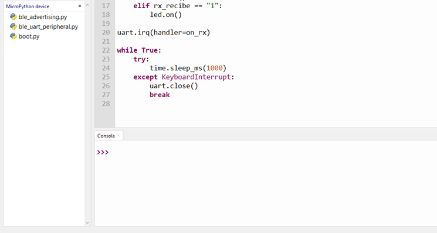
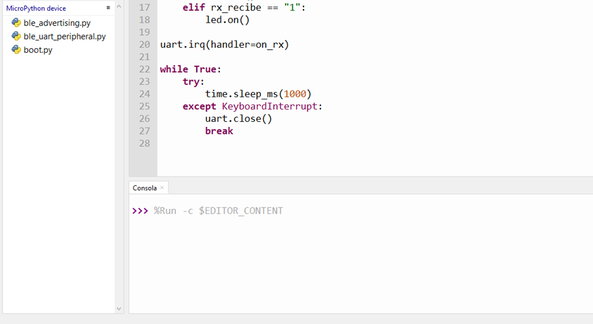
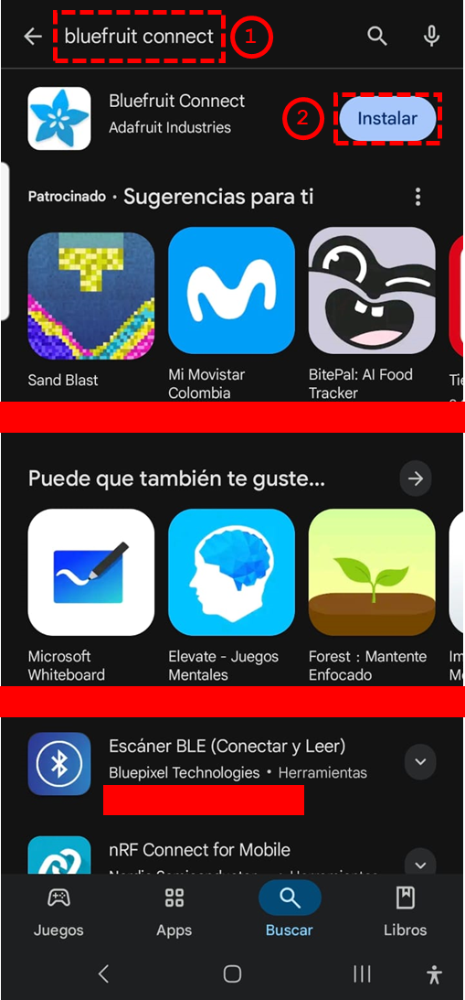
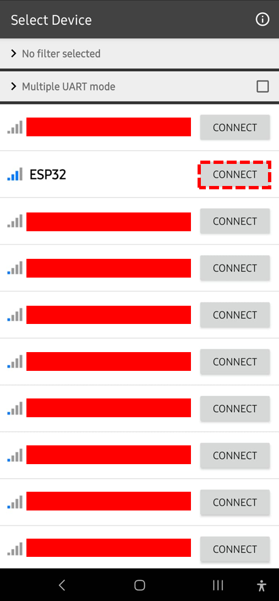
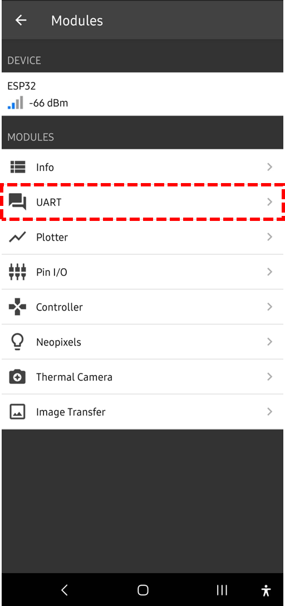
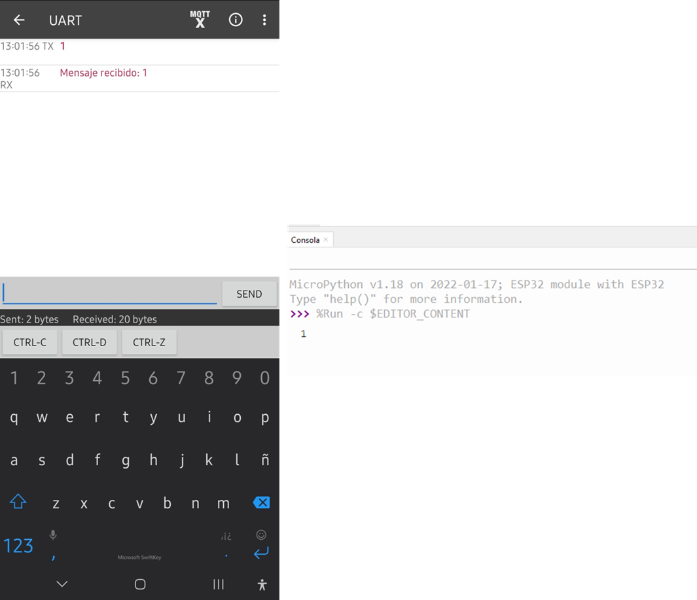
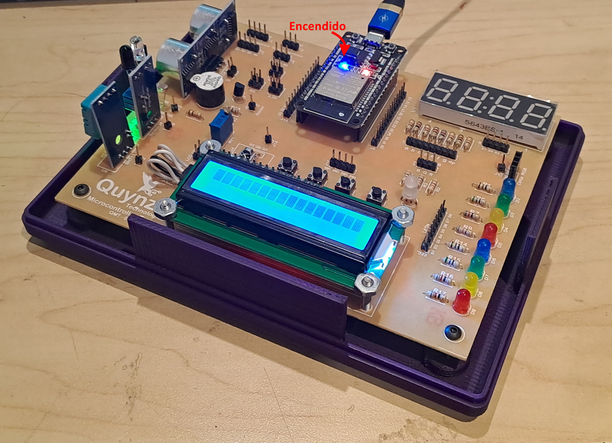
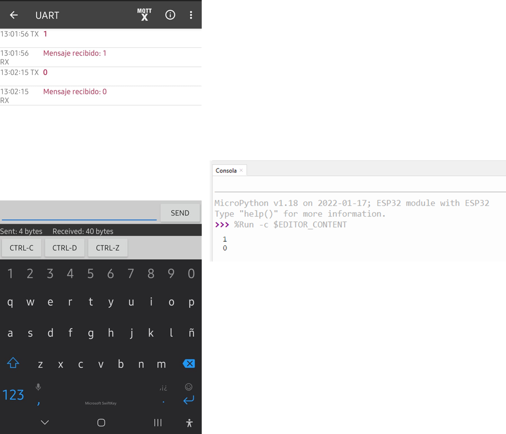

Ejercicio 3-4: Utilizar módulo Bluetooth de ESP32
Descripción
Usando Micropython, con el Ejercicio 3-4: Utilizar módulo Bluetooth de ESP32 se va a aprender a crear y configurar el módulo Bluetooth para permitir que otros dispositivos pueden conectarse.
Para este ejercicio se necesita el Entrenador ESP32, ¡el cual puede ser adquirido en este link al mejor precio!

Código
Para este ejercicio se necesitará los archivos:
- ble_advertising.py : Este archivo contiene la clase BLEAdvertising que se utiliza para configurar la publicidad del dispositivo Bluetooth Low Energy.
- ble_uart_peripheral.py : Este archivo contiene la clase BLEUART que define funciones útiles para configurar un dispositivo en modo periférico e implementar una comunicación UART.
- main.py: Script principal que contiene el código para configurar el módulo Bluetooth.
main.py
Se debe crear el archivo main.py que contiene el siguiente código:
from machine import Pin
import bluetooth
from ble_uart_peripheral import BLEUART
import time
ble = bluetooth.BLE()
uart = BLEUART(ble, name="ESP32")
led = Pin(2, Pin.OUT)
def on_rx():
rx_recibe = uart.read().decode().strip()
print(rx_recibe)
uart.write("Mensaje recibido: " + rx_recibe + "\n")
if rx_recibe == "0":
led.off()
elif rx_recibe == "1":
led.on()
uart.irq(handler=on_rx)
while True:
try:
time.sleep_ms(1000)
except KeyboardInterrupt:
uart.close()
break
Este programa tiene configurado una función interruptor que imprimirá en la consola el mensaje recibido a través del Bluetooth. Si el mensaje recibido es 0, se apagará el LED conectado al pin 2 de la placa ESP32, y si el mensaje es 1, se encenderá el LED.
Explicación paso a paso
main.py
En primer lugar importamos las librerías necesarias para este ejercicio:
- machine.Pin: La clase machine.Pin es usado para controlar los pines GPIO (General-purpose Input-Output) del ESP32
- bluetooth: La clase bluetooth es librería más básica para proveer una interface al controlador Bluetooth de la tarjeta
- BLEUART: La clase BLEUART de la librería ble_uart_peripheral es usado para la configuración de comunicación UART de un dispositivo periférico Bluetooth
- time: La librería time proporciona funciones para obtener la hora y fecha actuales, medir intervalos de tiempo y retrasos. En este ejercicio se va a utilizar para hacer un temporizador
from machine import Pin
import bluetooth
from ble_uart_peripheral import BLEUART
import time
Luego, se crea una instancia de la clase BLE y se inicializa la clase BLEUART con el nombre del dispositivo ESP32. Además, se configura un pin GPIO como salida para controlar un LED conectado al pin 2 de la placa ESP32.
ble = bluetooth.BLE()
uart = BLEUART(ble, name="ESP32")
led = Pin(2, Pin.OUT)
A continuación, se define una función on_rx que se ejecutará cuando se reciba un mensaje a través del Bluetooth. Esta función decodifica el mensaje recibido, imprime el mensaje en la consola y envía una respuesta de vuelta al dispositivo que envió el mensaje. En esta función, si el mensaje recibido es 0, se apaga el LED, y si es 1, se enciende el LED.
def on_rx():
rx_recibe = uart.read().decode().strip()
print(rx_recibe)
uart.write("Mensaje recibido: " + rx_recibe + "\n")
if rx_recibe == "0":
led.off()
elif rx_recibe == "1":
led.on()
Luego, se configura la interrupción del UART para que llame a la función on_rx cuando se reciba un mensaje.
uart.irq(handler=on_rx)
Finalmente, se inicia un bucle infinito que mantiene el programa en ejecución. Dentro de este bucle, se utiliza un temporizador para hacer una pausa de 1 segundo entre iteraciones. Si se presiona Ctrl+C, se cierra la conexión UART y se sale del bucle.
while True:
try:
time.sleep_ms(1000)
except KeyboardInterrupt:
uart.close()
break
Con este código, el ESP32 estará configurado para recibir mensajes a través del Bluetooth y controlar un LED en función de los mensajes recibidos.
Testeo en ESP32
Primero, se realiza la conexión del ESP32 a nuestro ordenador mediante USB:

Luego de subir los archivos ble_advertising.py y ble_uart_peripheral.py al dispositivo ESP32, en thonny se debe ver así:

Ahora se debe ejecutar el archivo main.py en el dispositivo ESP32. Una vez ejecutado, la consola de Thonny se debe quedar en blanco, indicando que el dispositivo está listo para recibir mensajes a través del Bluetooth.

Para probar la comunicación, se puede utilizar una aplicación de Bluetooth en un teléfono móvil o una computadora. En este caso, se utilizará la aplicación Bluefruit Connect disponible en Google Play Store:

Una vez instalada la aplicación, se debe buscar el dispositivo llamado ESP32 en la lista de dispositivos Bluetooth disponibles. Al encontrarlo, se debe conectar al dispositivo. Una vez conectado, se puede enviar mensajes al ESP32 a través de la aplicación.

Una vez conectado nos debemos dirigir al módulo de comunicación UART de la aplicación. Como vimos en el código, el ESP32 está configurado para recibir mensajes a través del Bluetooth, imprimir el mensaje en la consola de Thonny, enviar un mensaje de respuesta al dispositivo con la forma Mensaje recibido: XXX y controlar un LED en función de los mensajes recibidos.

En este módulo, se puede enviar mensajes al ESP32. Por ejemplo, si se envía el mensaje 1, el LED conectado al pin 2 del ESP32 se encenderá, y si se envía el mensaje 0, el LED se apagará. A continuación se envía el mensaje 1:


Y ahora se envía el mensaje 0:
